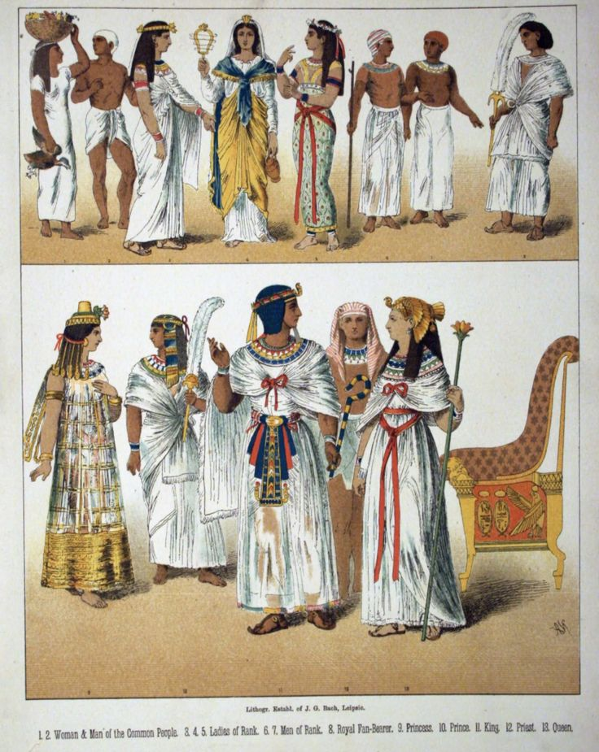
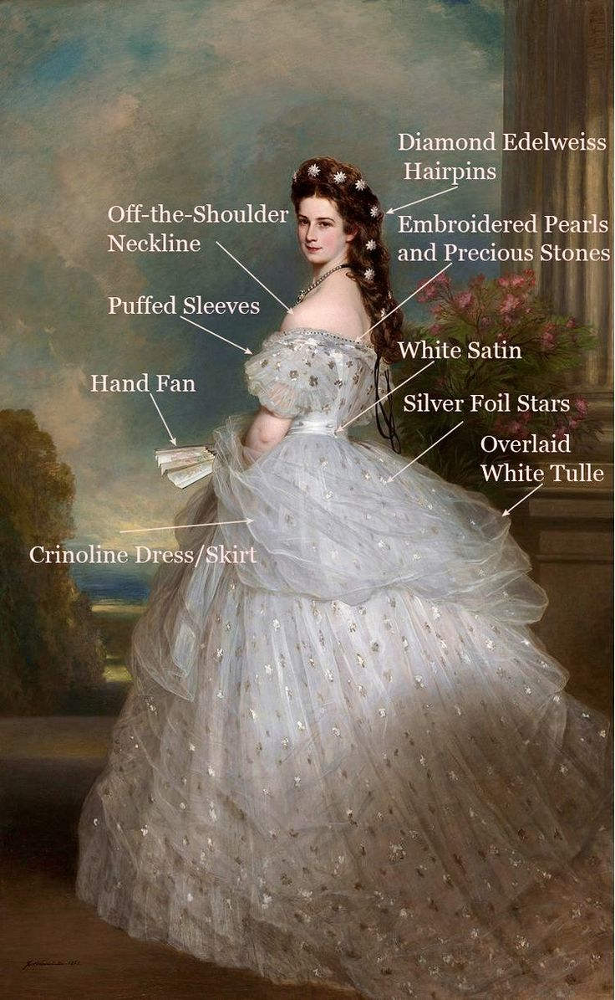
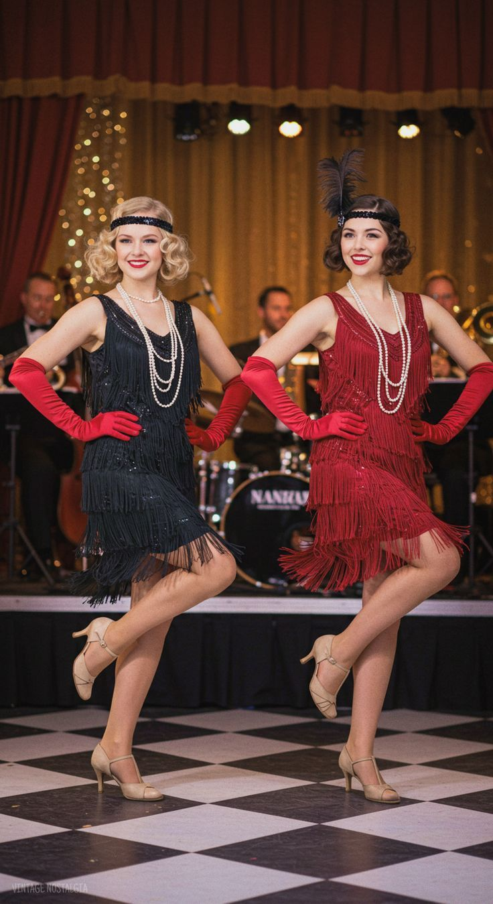
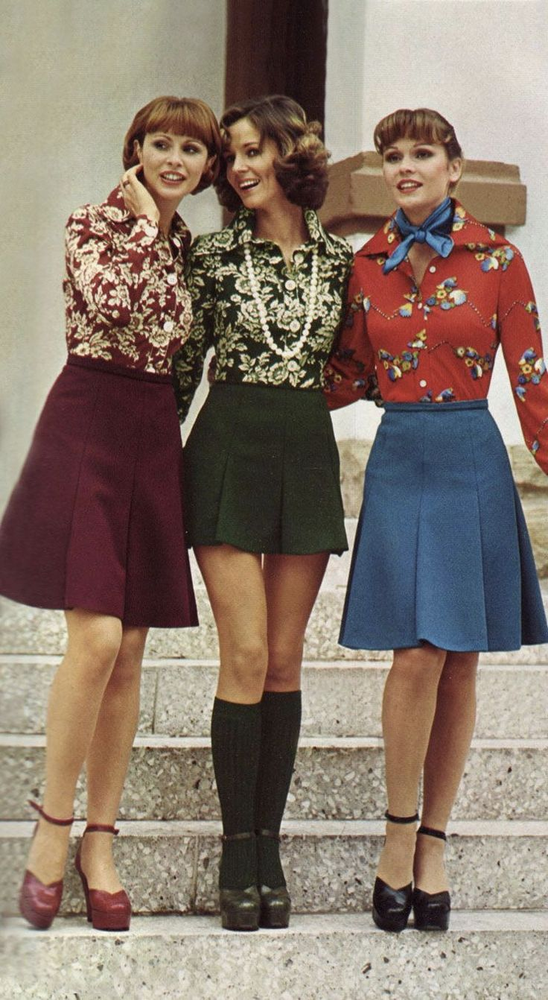
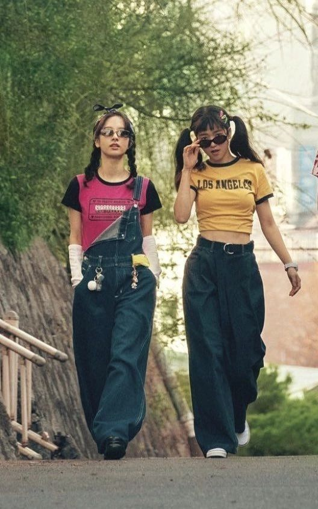
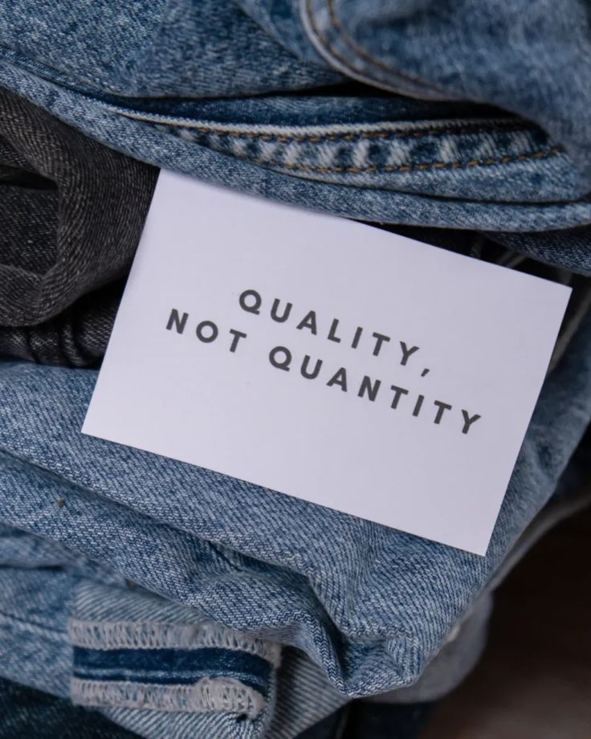

Era Fashion Kuno
Pada era Mesir kuno, pakaian tidak hanya melindungi tubuh, tetapi menjadi simbol status dan spiritualitas. Para bangsawan mengenakan linen putih yang bersih serta perhiasan emas sebagai lambang kekuasaan. Sementara itu, di Tiongkok kuno, kain sutra menjadi kemewahan yang hanya dipakai oleh kalangan istana. Setiap elemen busana memiliki makna dan identitas budaya.
Era Fashion Modern & Masa Depan
Fashion Istana Kerajaan
Di Eropa abad ke-17 sampai ke-19, fashion berubah menjadi simbol kekuasaan yang dipamerkan melalui gaun besar, korset, renda, dan ornamen mahal. Busana menjadi bagian penting dari etiket istana. Siapa pun yang memasuki lingkungan kerajaan harus menunjukkan kelas sosialnya melalui pakaian.
Revolusi Mode 1920-an
Pada era ini, perempuan mulai membebaskan diri dari aturan busana yang ketat. Rok lebih pendek, rambut gaya bob, dan gaun flapper yang ringan menjadi tren. Mode berubah menjadi bentuk ekspresi kebebasan, kepercayaan diri, dan gaya hidup modern.
Mini Skirt 1960-an
Tahun 60-an membawa semangat baru dengan ikon seperti mini skirt yang diciptakan oleh Mary Quant. Busana menjadi lebih eksperimental, geometris, dan terinspirasi oleh seni pop. Ini menandai pergeseran mode dari Haute Couture yang eksklusif ke gaya yang lebih muda dan siap pakai.
Gaya Grunge 1990-an
Sebagai bentuk penolakan terhadap kemewahan era sebelumnya, gaya Grunge muncul dengan pakaian longgar, flannel, dan sepatu bot yang kasual. Ini mencerminkan subkultur musik dan menyuarakan sikap anti-fashion. Mode menjadi lebih otentik dan tidak terstruktur.
Dampak Fast Fashion

Awal abad ke-21 ditandai dengan munculnya 'Fast Fashion', yaitu tren produksi pakaian yang cepat dan murah. Ini membuat mode lebih terjangkau namun memicu perdebatan serius tentang keberlanjutan dan etika pekerja di industri garmen.
Mode Berkelanjutan
Menanggapi masalah lingkungan, fashion masa depan semakin mengarah ke mode berkelanjutan (Sustainable Fashion). Fokusnya adalah pada bahan daur ulang, produksi etis, dan konsep 'slow fashion' untuk mengurangi limbah.